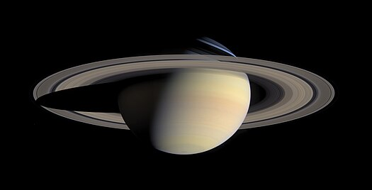

Der Saturn ist von der Sonne aus gesehen der sechste Planet des Sonnensystems und mit einem Äquatordurchmesser von etwa 120.500 Kilometern (9,5-facher Erddurchmesser) nach Jupiter der zweitgrößte. Mit 95 Erdmassen hat er jedoch nur 30 % der Masse Jupiters. Wegen seines auffallenden und schon im kleinen Fernrohr sichtbaren Ringsystems wird er oft auch der Ringplanet genannt, obwohl auch bei den anderen drei Gasplaneten Ringsysteme gefunden wurden. Der Saturn hat eine durchschnittliche Entfernung zur Sonne von gut 1,43 Milliarden Kilometern, seine Bahn verläuft zwischen der von Jupiter und der des sonnenferneren Uranus. Er ist der äußerste Planet, der auch mit bloßem Auge gut sichtbar ist, und war daher schon Jahrtausende vor der Erfindung des Fernrohrs bekannt. Als Gasplanet hat Saturn keine feste Oberfläche. Seine oberen Schichten bestehen zu etwa 96 % Stoffanteil aus Wasserstoff. Von allen Planeten des Sonnensystems weist Saturn die geringste mittlere Dichte auf (etwa 0,69 g/cm³).[1] Von den anderen Planeten hebt sich der Saturn durch seine ausgeprägten, hellen und schon lange bekannten Ringe ab, die zu großen Teilen aus Wassereis- und Gesteinsbrocken bestehen. Der scheinbare Winkeldurchmesser des Planetenkörpers beträgt je nach Erdentfernung zwischen 15″ und 20″, jener der Ringe zwischen 37″ und 46″. Die sogenannten Äquatorstreifen der Wolkenschichten sind auf Saturn weniger deutlich ausgeprägt als bei Jupiter, was wahrscheinlich mit einer hochlagernden Dunstschicht zusammenhängt. Bis 2023 wurden 145 Monde des Saturns entdeckt.[3] Der mit Abstand größte Saturnmond ist Titan mit 5150 Kilometern Durchmesser. Benannt ist der Planet nach dem römischen Gott des Reichtums und der Ernte, Saturn. Sein astronomisches Symbol ♄ stilisiert die Sichel des Gottes.
 1 2 3 4 5 67
8 9